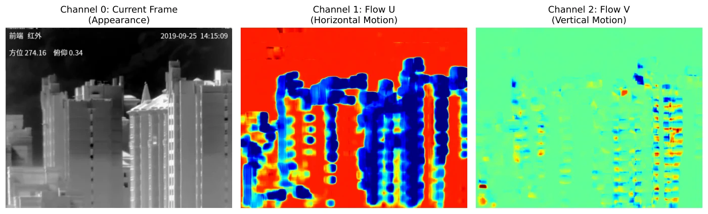
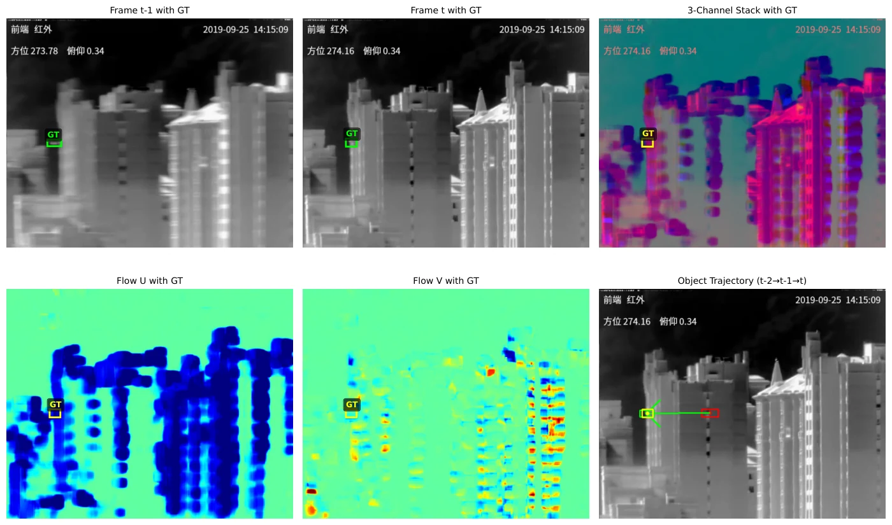
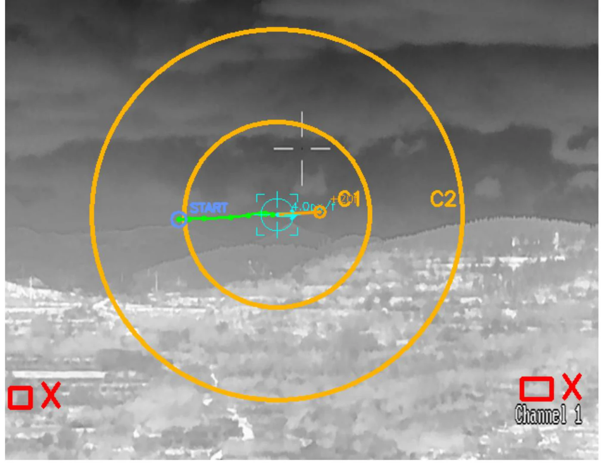

The abstract is quoted verbatim from the paper. Every number below was checked against the table it comes from in the paper itself. Figures are the paper’s own, with the paper’s own captions, except the one diagram labelled as drawn for this page.
Optical Flow-Enhanced Thermal UAV Detection Under Camera Ego-Motion for Real-Time Tactical C-UAV
J. Computational Vision and Imaging Systems 11(1) · pp. 122-127 · Proc. CVIS 2025 · journal record published 2026-03-01 · Sole first author · VIP Lab, University of Waterloo
Workflow drawn from the method described in the paper. Not a figure from the paper.
Thermal UAV detection from mobile platforms is difficult because camera ego-motion corrupts the motion cues needed to detect small airborne targets. We present an optical flow-enhanced YOLO detector that fuses thermal appearance with dense horizontal and vertical flow channels through a custom OpticalFlowConv stem. On the Anti-UAV thermal benchmark (233,667 frames across 205 sequences), using a sequential per-sequence split that preserves temporal order, the proposed detector reaches 35.8% mAP50 and 21.9% mAP50-95, outperforming a single-frame YOLO11 baseline by 11.3 mAP50 points and a frame-differencing baseline by 9.1 points. These results support motion-enhanced thermal detection as a practical sensing component for mobile tactical C-UAV systems under significant camera motion.
The problem. A drone in a thermal frame is a handful of pixels. It has almost no appearance to recognise, so a detector leans on motion instead. But if the camera is handheld or vehicle-mounted, the whole scene moves (buildings, trees, horizon) and the drone’s own motion disappears into that. Frame differencing, the usual cheap fix, breaks for exactly this reason.
The method. Compute dense optical flow between consecutive thermal frames with Farnebäck’s method. Keep the horizontal and vertical components as two extra channels alongside the thermal frame. Feed all three to YOLO11, but replace its first convolution, which would blend the channels immediately, with a stem that processes appearance and motion on separate paths and only then fuses them, with the fusion weights learned.
The three input channels


Results on the Anti-UAV validation partition
Sequential per-sequence protocol, which keeps frames in temporal order rather than shuffling them.
| Method | mAP50 | mAP50-95 | Precision | Recall |
|---|---|---|---|---|
| YOLO11 | 0.245 | 0.156 | 0.312 | 0.234 |
| Frame differencing | 0.267 | 0.171 | 0.328 | 0.251 |
| Ours | 0.358 | 0.219 | 0.401 | 0.324 |
What the split stem is worth
| Configuration | mAP50 | mAP50-95 |
|---|---|---|
| Standard convolution | 0.312 | 0.189 |
| Separate branches | 0.341 | 0.207 |
| + learnable fusion | 0.358 | 0.219 |
The three-channel input alone gets 0.312. Keeping appearance and motion apart adds 0.029. Learning how to recombine them adds another 0.017.
The harder the camera shakes, the bigger the gap
| Camera motion | Frame differencing | Ours |
|---|---|---|
| Low | 0.289 | 0.387 |
| Medium | 0.251 | 0.342 |
| High | 0.204 | 0.315 |
Frame differencing loses 29% of its score from low to high motion. This method loses 19%, and its lead widens from 9.8 points to 11.1.
Keeping a track alive

The paper states this itself: every benchmark figure above is measured at the detector stage, before the BoT-SORT tracker and the temporal-coherence filter are applied. Those two are part of the deployment stack, not part of the scores. The intent is to isolate what the motion-enhanced detector contributes from what downstream heuristics clean up afterwards.
BibTeX
@article{maser2025cvis,
author = {Maser, Bob and Srebrnjak Yang, Adam and Ramlal, Adrian and Zelek, John},
title = {Optical Flow-Enhanced Thermal UAV Detection Under Camera Ego-Motion
for Real-Time Tactical C-UAV},
journal = {Journal of Computational Vision and Imaging Systems},
volume = {11},
number = {1},
pages = {122--127},
year = {2025},
url = {https://openjournals.uwaterloo.ca/index.php/vsl/article/view/7216}
}